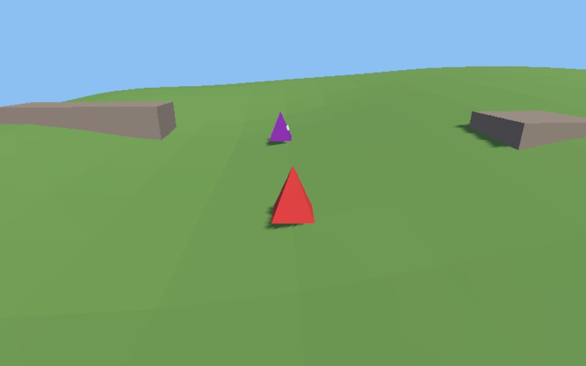

Mockup of ShapeLand's web page (the Unity web template), on Vercel at shapeland.lucyawrey.com. The page asks the game server whether it's up before loading the game; "Closed" is what it shows when it isn't. The picture stands in for the game. Fullscreen sits at the end of the controls row. Gamepad icons: Kenney's Input Prompts (CC0), recoloured.
ShapeLandComet's demo game
Server openServer openNot open for testing

Loading ShapeLand
7.0 of 12.1 MB
ShapeLand isn't open for testing right now
The game server only runs during test sessions. Try again later.